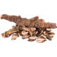
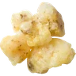
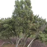

Oil Grimoire
 Rock Rose Essential Oil
Rock Rose Essential Oil

Calamus Essential Oil
Elemi Essential Oil
Juniper Berry Essential OilLavender Essential OilLemon Essential OilBotanical Source
- Scientific name: Cistus ladaniferus
- Family: Cistaceae
- Synonyms: Cistus (oil), gum cistus, ciste, cyste (absolute), labdanum gum, ambreine, European rock rose
- Plant: A small sticky shrub up to three metres high with lance-shaped leaves that are white and furry on the underside, and fragrant white flowers.
- Source of oil: Labdanum gum, a dark brown solid oleoresin obtained by boiling the plant material in water; the oil is then drawn from the gum, the absolute, or directly from leaves and twigs.
- Evaporation: Base note (warm, sweet, dry-herbaceous, musky)
Distribution
Native to the Mediterranean mountainous regions and the Middle East. Now found throughout the Mediterranean, especially southern France, Spain, Portugal, Greece, Morocco, Cyprus, and the former Yugoslavia. The oil is mainly produced in Spain.
Other Species
Labdanum gum is also obtained from other Cistus species, notably C. incanus, and from related subspecies. The oil from the closely related plant frostwort (Helianthemum canadense), also called cistus, carries its own medicinal reputation, particularly for scrofulous skin conditions, ulcers, and tumours.
Extraction & Characteristics
Methods:
- A resinoid or resin concrete and absolute by solvent extraction from the crude gum.
- An essential oil by steam distillation from the crude gum, from the absolute, or directly from the leaves and twigs of the plant.
Appearance and scent:
- Absolute: A semi-solid green or amber mass with a rich, sweet, herbaceous-balsamic odour.
- Essential oil: A dark yellow or amber viscous liquid with a warm, sweet, dry-herbaceous, musky scent.
Principal Constituents
More than 170 constituents have been identified, including pinenes, camphene, sabinene, myrcene, phellandrene, limonene, cymene, cineol, borneol, nerol, geraniol, and fenchone, among others. Exact composition varies by source.
Therapeutic Actions
Antimicrobial, antiseptic, antitussive, astringent, balsamic, emmenagogue, expectorant, and tonic.
Folk and Historical Use
Labdanum is one of the early aromatic substances of the ancient world. The gum was traditionally used for catarrh, diarrhoea, dysentery, and to promote menstruation, and was applied externally in plasters. The closely related frostwort (Helianthemum canadense) carries a parallel reputation in Western herbalism for scrofulous skin conditions, ulcers, and tumours, including cancer.
Aromatherapy Uses
- Skin care: mature skin and wrinkles.
- Respiratory system: coughs, bronchitis, and rhinitis.
- Immune system: colds.
Blending Partners
 Oakmoss Absolute,
Oakmoss Absolute,  Clary Sage Essential Oil,
Clary Sage Essential Oil,  Pine Essential Oil, Juniper Berry Essential Oil, Calamus Essential Oil, Lavender Essential Oil, Lavandin Essential Oil,
Pine Essential Oil, Juniper Berry Essential Oil, Calamus Essential Oil, Lavender Essential Oil, Lavandin Essential Oil,  Bergamot Essential Oil,
Bergamot Essential Oil,  Cypress Essential Oil,
Cypress Essential Oil,  Vetivert Essential Oil,
Vetivert Essential Oil,  Sandalwood Essential Oil,
Sandalwood Essential Oil,  Patchouli Essential Oil,
Patchouli Essential Oil,  Frankincense Essential Oil (olibanum),
Frankincense Essential Oil (olibanum),  Moroccan Chamomile Essential Oil, plus opopanax and oriental bases.
Moroccan Chamomile Essential Oil, plus opopanax and oriental bases.
Other Uses
Used as a fixative and fragrance component in lotions, powders, soaps, detergents, colognes, and perfumes, especially oriental perfumes and aftershaves. Also employed across most major food categories, particularly meat products, alongside alcoholic and soft drinks.
Cross-References
- Plant entry: Rock Rose
Therapeutic Applications
- Coughs: Apply via massage, vaporizer/diffuser, or gentle inhalation.
- Bronchitis: Apply via massage, vaporizer/diffuser, or gentle inhalation.
- Wrinkles & Mature Skin: Apply via massage, skin oil/lotion, flower water, or bath.
- Sinusitis: Apply via steam inhalation.